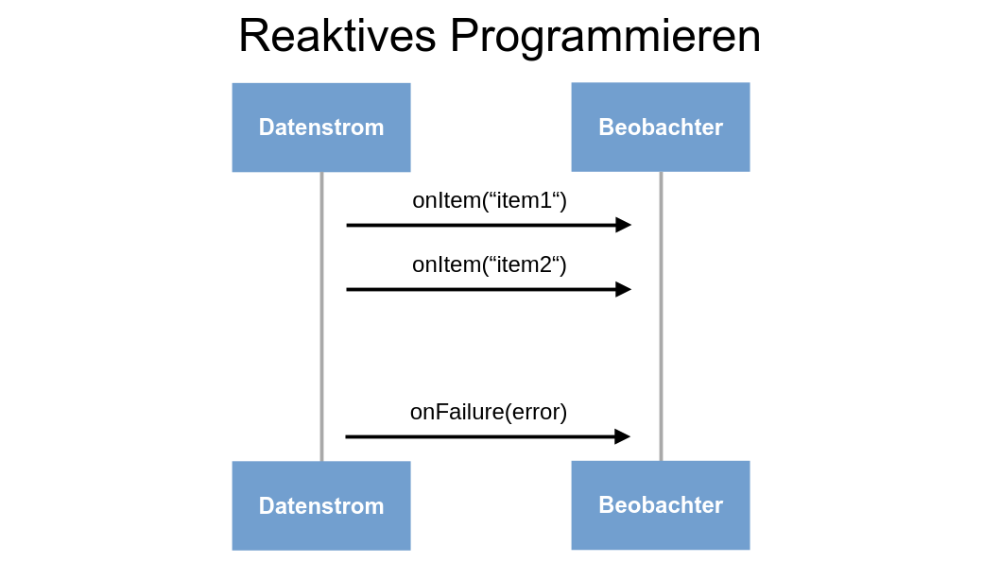
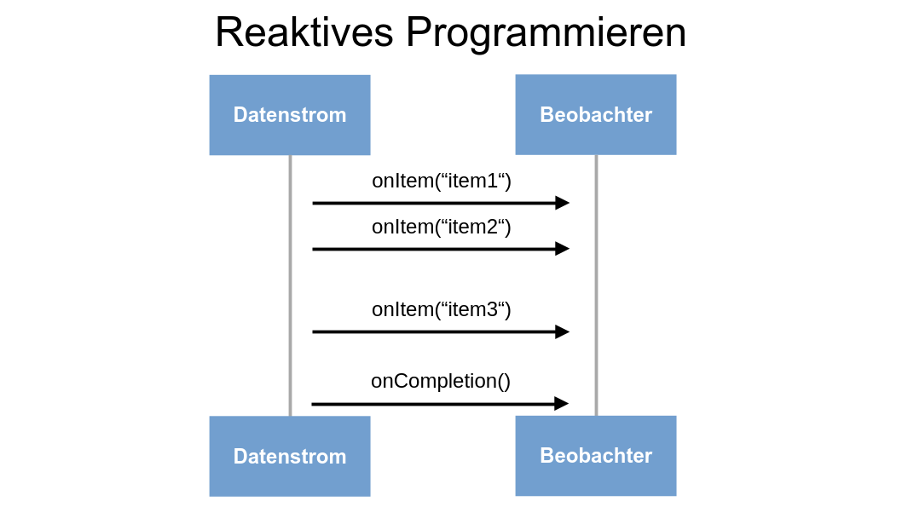

1. Was ist Mutiny
Mutiny ist eine Programmbibliothek zur reaktiven, event getriebenen, asynchronen Programmierung von Applikationen.
1.1. Was versteht man unter asynchron?
Um das Konzept von asynchroner Datenverarbeitung besser zu verstehen ist es nützlich zuerst einen Blick auf die synchrone Verarbeitung zu werfen.
1.1.1. Synchrone Verarbeitung
Bei der synchronen Datenverarbeitung werden die einzelnen Datenverarbeitungsschritte sequenziell ausgeführt. Bei jeglichen I/O Operationen (Datenbankzugriffe, HTTP Requests, …) blockiert die Anwendung. Das heißt, solange Prozess B keine Antwort geliefert hat, führt Prozess A keine weiteren Schritte aus.
Bei der synchronen Verarbeitung werden die Aufgaben oder Schritte
-
hintereinander und
-
in einer fixen Reihenfolge
ausgeführt.
1.1.2. Asynchrone Verarbeitung
Die Idee der asynchronen Datenverarbeitung ist es, die durch die I/O Operationen entstandene Wartezeit sinnvoll zu nutzen.
Anstatt zu blockieren, nimmt Prozess A in der Zwischenzeit die nächste Aufgabe auf sich. Man spricht hier von nicht-blockierender (non-blocking) Ausführung. Wichtig zu verstehen ist, dass die neue Aufgabe ebenfalls eine I/O Operation sein kann und Prozess A möglicherweise Zeit für mehrere Aufgaben hat bevor er die Antwort von Prozess B erhält.
Bei der asynchronen Verarbeitung werden die Schritte oder Aufgaben
-
in einer beliebigen Reihenfolge
-
und ohne zu blockieren
erledigt.
1.1.3. Asynchron vs Multi-Threaded
Auch wenn die Begriffe asynchron und Multi-Threaded gerne vermischt werden, ist es wichtig zu verstehen, dass sie nicht dasselbe sind.
Sowohl asynchrone Datenverarbeitung als auch Multithreading (Mehrsträngigkeit) haben das Ziel mehrere Aufgaben gleichzeitig auszuführen.
Die asynchrone Datenverarbeitung setzt aber nicht voraus, dass dies parallel passieren muss. Parallele Ausführung ist das Merkmal von Multithreading.
Multithreading ist also "nur" eine Form der asynchronen Datenverarbeitung.
Bei Multithreading geht es um Arbeitsprozesse (workers), bei der asynchronen Datenverarbeitung um Aufgaben (tasks).
Man kann zwischen verschiedenen Arten der Ausführung unterscheiden:
Einsträngig synchron
Die einzelnen Aufgaben sequenziell ausgeführt. Bei I/O Operationen wird blockiert.

Einsträngig asynchron
Die einzelnen Aufgaben werden gleichzeitig und in beliebiger Reihenfolge ausgeführt, jedoch nicht parallel. I/O Operationen geben Zeit für andere Aufgaben, wodurch die gleichzeitige Ausführung ermöglicht wird.
1.2. Reactive
1.2.1. Unterscheidung
Das Wort Reactive wird mittlerweile mit sehr vielen unterschiedlichen Konzepten assoziiert. In Bezug auf Mutiny steht der Begriff Reactive für Reactive Programming. Nicht zu verwechseln mit der reaktiven Architektur von Quarkus. Die Konzepte eines Reaktiven Systems und Reaktiver Programmierung arbeiten zwar im Falle von Quarkus eng zusammen, sind aber nicht dasselbe.
1.2.2. Was ist reaktives Programmieren?
Reactive programming is about programming with data streams.
What is Reactive Programming?
Im Mittelpunkt der reaktiven Programmierung stehen Datenströme und deren Beobachtung. Bei der reaktiven Programmierung definieren wir was passiert, wenn wir etwas in unserem Datenstrom beobachten.
Reaktives Programmieren ist von Natur aus asynchron, da der Zeitpunkt, wann welche Daten im Datenstrom gesehen werden nicht bekannt ist.

|

|
Mutiny unterstützt das Erstellen solcher Datenströme und das Verarbeiten von der durch die Beobachtung aufkommenden Events.
2. Warum Mutiny und nicht <insert-reactive-library-here>?
-
Mutinyist die primäre API für reaktive Quarkus Applikationen. -
Laut der
MutinyDokumentation:-
Anfängerfreundlicher als die Alternativen
-
Programmierung benötigt keine fortgeschrittenen Programmierkenntnisse
-
Leichter zu verstehen
-
-
Auch nach 6 Monaten Programmierpause noch lesbar
-
Library Sourcecode leichtgewichtiger
-
Weniger Lines of code (LOC)
-
Weniger Files
-
-
3. Alternativen (in der Java Welt)
-
-
Wird Häufig für Android Applikationen verwendet
-
-
-
Primäre Bibliothek für Java Spring Applikationen
-
RxJava und Project Reactor sind sich sehr ähnlich.
4. Events und Pipelines
Als Nutzer/in von Mutiny erstellt man Pipelines, durch die die Events "fließen". Eine Pipeline ist eine Menge von Verarbeitungsschritten, die vom Programmierer definiert werden.
Grundsätzlich "fließen" Events von Quellen (sources) zu bis zu ihrem Ziel (sinks).
Events werden von Publishern "veröffentlicht" und am Ende der Pipeline von Subscribern konsumiert.
Insgesamt gibt es drei wichtige Arten von Events, die von Publishern zu Subscribern "fließen":
-
Item: Event, das einen gewissen Wert beinhaltet.
-
Completion: Event, das signalisiert, dass keine weiteren Werte veröffentlicht werden.
-
Failure: Fehler bei der Quelle. Es können keine weiteren Werte veröffentlicht werden.
| Eine Quelle veröffentlicht nur dann Events, wenn sie von einem Subscriber abonniert wurde. Ohne Subscriber wird kein Code ausgeführt. |
5. Uni and Multi (Event-Sources)
Mutiny definiert zwei reaktive Datentypen:
-
Uni<T>: Repräsentiert einen Datenstrom der entweder ein Item oder eine Failure liefert. -
Multi<T>: Repräsentiert einen Datenstrom der 0 bis n, möglicherweise unlimitiert viele Items liefert.
Sowohl Uni<T> als auch Multi<T> sind asynchrone Datentypen. Sie beobachten und veröffentlichen Events zu beliebigen Zeitpunkten.
6. Codebeispiel für Pipelines
@GET
@Path("{id}")
@Produces(MediaType.APPLICATION_JSON)
@WithSession (1)
public Uni<UserDto> getById(@PathParam("id") Long id) { (2)
return userRepository.findById(id) (3)
.onItem().transform(user -> new UserDto( (4)
user.getId(),
user.getFirstName(),
user.getLastName(),
user.getEmail())
);
}Erklärung
| 1 | Startet eine reaktive Session für die Methode. Ohne Session können keine Datenbankzugriffe durchgeführt werden. Vergleichbar mit der klassischen (blockierenden) org.Hibernate.Session / Entity Manager. Die Session ermöglicht es uns unter anderem CRUD Operationen mit unseren Entitäten durchzuführen. |
| 2 | Der Rückgabewert der Funktion ist nicht wie bei herkömmlichen synchronen Funktionen Response sondern Uni<Response>. Wir geben hier eine Eventquelle zurück, die "verspricht" genau eine Response oder eine Failure zu veröffentlichen. |
| 3 | In diesem Fall ist unsere Eventquelle der Aufruf des PanacheRepositories findById. Dieser gibt einen Uni<User> zurück, verspricht also genau einen Benutzer oder einen Fehler zurückzugeben. |
| 4 | Mit onItem().transform() fügen wir einen zusätzlichen Verarbeitungsschritt in unserer Pipeline hinzu. In diesem Fall wird unsere User Entität zu einem UserDto umgewandelt. Das Item, das das Event mit sich trägt, wird durch transform also durch ein neues ersetzt. Das Ergebnis wird wieder in den Datenstrom gegeben. |
@POST
@Produces(MediaType.APPLICATION_JSON)
@Consumes(MediaType.APPLICATION_JSON)
@WithTransaction (1)
public Uni<Response> createNew(User user, @Context UriInfo uriInfo) { (2)
return Uni.createFrom()
.item(user) (3)
.onItem().ifNull().failWith(new WebApplicationException(Response.Status.BAD_REQUEST)) (4)
.onItem().ifNotNull().transformToUni(ignored -> userRepository.persistAndFlush(user)) (5)
.onItem().transform(u -> { (6)
URI uri = uriInfo
.getAbsolutePathBuilder()
.path(Long.toString(u.getId()))
.build();
return Response
.created(uri)
.entity(u)
.build();
});
}Erklärung
| 1 | @WithTransaction ist in das reaktive Equivalent zu @Transactional |
| 2 | Der Rückgabewert der Funktion ist nicht wie bei herkömmlichen synchronen Funktionen Response sondern Uni<Response>. Wir geben hier eine Eventquelle zurück, die "verspricht" genau eine Response oder eine Failure zu veröffentlichen. |
| 3 | Hier erstellen wir unseren Datenstrom mit einem Item. In diesem Fall ist das das User-Objekt, welches wir erhalten haben. |
| 4 | Mit onItem horchen wir auf das Item Event des Streams. Erhalten wir ein Null-Item so erstellen wir ein neues Failure Event, welches eine WebApplicationException trägt |
| 5 | Erhalten wir kein Null-Item, transformieren wir unser Item-Event. Wir persistieren das mitgegebene User-Objekt. Der Repository aufruf gibt erneut einen Uni<T> zurück. Mit transformToUni transformieren wir das Event in Datenstrom mit einer asynchronen Funktion. Das Event, welches vom zurückgegebenen Uni produziert wird, wird in den Datenfluss gegeben. |
| 6 | Im letzten Schritt transformieren wir unseren Uni erneut, aber dieses Mal mit transform. Hier wird nicht der Datenstrom, sondern das Item im Datenstrom ersetzt. Aus dem User (Uni<User>) wird eine Response. (Uni<Response>) |
7. Nützliche Funktionen
In den vorangehenden Beispielen wurden bereits einige nützliche Funktionen verwenden. Nachfolgenden werden diese genauer erklärt und erweitert.
on{event}() erlaubt es auf verschiedene Events zu achten. Auf onItem() und onFailure() wird in den folgenden Abschnitten genauer eingegangen.
7.1. Items
onItem()
|
Vergleichbar mit Java streams |
|
Wandelt das im Event enthaltene Item vom Typ |
|
Führt den Consumer |
|
Sehr ähnlich zu |
7.2. Failures
onFailure()
|
Wandelt das |
|
Versucht die fehlgeschlagene Aktion noch einmal auszuführen. Sollte diese mehrfach fehlschlagen wird sie maximal |
8. Codevergleich: reaktiv vs imperativ
8.1. GetById
Reaktiv |
Imperativ |
|
Sowohl die imperative als auch reaktive Version des getById-Endpunkts sind relativ kompakt und übersichtlich.
8.2. CreateUser
Reaktiv |
Imperativ |
|
Obwohl durch die reaktive Variante nur ein einziger blockierender Aufruf verhindert wird, ist sie schon etwas länger und definitiv komplizierter.
9. Anwendungsfälle von reaktivem Programmieren
Mutiny beziehungsweise reaktives Programmieren im Allgemeinen, ist kein "Wundermittel". Es gibt Anwendungsfälle, bei denen reaktives Programmieren keine Vorteile mit sich bringt oder sogar Nachteile.
Reaktives Programmieren ist in Fällen in denen
-
viele I/O Operationen ausgeführt
-
und/oder eine große Menge an Anfragen gleichzeitig verarbeitet
werden müssen vorteilhaft. (I/O Bound Tasks)
Imperatives Programmieren ist in Fällen in denen
-
Daten im Hauptspeicher verarbeitet
-
und wenig bis keine I/O Operationen durchgeführt
werden müssen vorteilhaft. (CPU Bound Tasks)
10. Uni<T> vs CompletableFuture
Ein CompletableFuture ist ein seit Java 8 vertretener Datentyp, der das Ergebnis einer asynchronen Operation darstellt. Er dient als Platzhalter, bis das tatsächliche Ergebnis verfügbar ist.
Gleich wie bei Mutiny Pipelines können Operationen aneinander gekettet werden (then<action>()) und Fehler behandelt werden (exceptionally())
Die Hauptunterschiede zwischen Uni<T> und CompletableFuture sind:
Ausführung:
-
Completable Future: eager (sofort)
-
Uni: lazy (erst nach
Subscription)
Caching:
-
Completable Future: cached (Ergebnis wird gespeichert)
-
Uni: not cached (jede neue
Subscriptionverursacht eine neue Ausführung)
Features:
Mutiny stellt neben dem Uni<T> Datentyp noch Multi<T> zur verfügung, welcher noch einige zusätzliche Dinge ermöglicht (z.B. unendliche Datenströme), die durch Futures nicht dargestellt werden können.
11. Warum reaktives Programmieren in Franklyn eingesetzt wird
-
Massenweise I/O Operationen
-
Screenshot speichern/laden (Datenbank + Filesystem)
-
Regelmäßiges speichern vom Verbindungszustand (Datenbank)
-
Exam CRUD Operationen
-
-
Große Mengen an Anfragen während Tests
-
Dauerhafte Kommunikation mit 20 - 30 Schüler:innen pro Test
-
Regelmäßige Screenshot-uploads
-
12. Demos
Im Repository sind neben der Dokumentation auch noch 2 Demoprojekte aufzufinden:
Beide Projekte implementieren einen kleinen REST-Service, mit einem User Endpunkt, welcher create und read Operationen zur Verfügung stellt.
Die erstellten Nutzer werden in der Datenbank gespeichert. Bei read Operationen wird das um einige "sensible" Daten reduzierte UserDto zurückgeliefert.
Klassen
-
User: User Entität, die in der Datenbank gespeichert wird -
UserDto: User ohne "sensible" Daten (DateOfBirth, Adresse) -
UserRepository: Panache repository für Datenbankzugriffe -
UserResource: REST Endpunkte fürreadundcreate
Die User und UserDto Klassen sind für beide Projekte gleich:
User
package at.htl.feature.user;
import jakarta.persistence.*;
import java.time.LocalDate;
@Entity
@Table(name = "MD_USER")
public class User {
@Id
@GeneratedValue(strategy = GenerationType.SEQUENCE)
private Long id;
@Column(name = "u_firstname", nullable = false)
private String firstName;
@Column(name = "u_lastname", nullable = false)
private String lastName;
@Column(name ="u_email", nullable = false)
private String email;
@Column(name ="u_date_of_birth", nullable = false)
private LocalDate dateOfBirth;
@Column(name = "u_address", nullable = false)
private String address;
public User() {
}
public User(String firstName, String lastName, String email, LocalDate dateOfBirth, String address) {
this.firstName = firstName;
this.lastName = lastName;
this.email = email;
this.dateOfBirth = dateOfBirth;
this.address = address;
}
public Long getId() {
return id;
}
public void setId(Long id) {
this.id = id;
}
public String getFirstName() {
return firstName;
}
public void setFirstName(String firstName) {
this.firstName = firstName;
}
public String getLastName() {
return lastName;
}
public void setLastName(String lastName) {
this.lastName = lastName;
}
public String getEmail() {
return email;
}
public void setEmail(String email) {
this.email = email;
}
public LocalDate getDateOfBirth() {
return dateOfBirth;
}
public void setDateOfBirth(LocalDate dateOfBirth) {
this.dateOfBirth = dateOfBirth;
}
public String getAddress() {
return address;
}
public void setAddress(String address) {
this.address = address;
}
}UserDto
package at.htl.feature.user;
public record UserDto(
Long id,
String firstname,
String lastname,
String email
) {
}12.1. Unterschied classic vs mutiny
-
classic-demo: Implementierung der REST Endpunkte ist durch "klassische" blockierende Datenbankzugriffe umgesetzt.
-
mutiny-demo: Implementierung der REST Endpunkte mit reaktiven asynchronen Datenbankzugriffen.
12.2. Classic (Imperativ)
mvn io.quarkus.platform:quarkus-maven-plugin:3.17.3:create \
-DprojectGroupId=at.htl \
-DprojectArtifactId=classic-demo \
-Dextensions='rest-jackson, quarkus-hibernate-orm-panache, quarkus-jdbc-postgresql, smallrye-openapi, smallrye-health'
cd classic-demoFür die imperative Implementierung werden
-
quarkus-hibernate-orm-panache -
und
quarkus-jdbc-postgresql
für als Bibliotheken für Datenbankzugriffe verwendet.
quarkus.package.jar.type=uber-jar
quarkus.http.port=8080
quarkus.datasource.db-kind = postgresql
quarkus.datasource.username = app
quarkus.datasource.password = app
quarkus.datasource.jdbc.url = jdbc:postgresql://localhost:5432/db
%dev.quarkus.hibernate-orm.database.generation=drop-and-createIn den application.properties wird hier ein jdbc connection string verwendet. Sonst unterscheidet sich die Konfigurationsdatei nicht von der reaktiven Variante.
UserRepository und UserResource sind wie folgt implementiert:
UserRepository
package at.htl.feature.user;
import io.quarkus.hibernate.orm.panache.PanacheRepository;
import jakarta.enterprise.context.ApplicationScoped;
@ApplicationScoped
public class UserRepository implements PanacheRepository<User> {
}UserResource
package at.htl.feature.user;
import io.smallrye.mutiny.Uni;
import jakarta.inject.Inject;
import jakarta.transaction.Transactional;
import jakarta.ws.rs.*;
import jakarta.ws.rs.core.Context;
import jakarta.ws.rs.core.MediaType;
import jakarta.ws.rs.core.Response;
import jakarta.ws.rs.core.UriInfo;
import java.net.URI;
import java.util.List;
@Path("/user")
public class UserResource {
@Inject
UserRepository userRepository;
@GET
@Produces(MediaType.APPLICATION_JSON)
public List<UserDto> getAll() {
return userRepository.listAll()
.stream()
.map(user -> new UserDto(
user.getId(),
user.getFirstName(),
user.getLastName(),
user.getEmail()
))
.toList();
}
// tag::get_simple_classic[]
@GET
@Path("{id}")
@Produces(MediaType.APPLICATION_JSON)
public UserDto getById(@PathParam("id") Long id) {
// = Blocking=
User user = userRepository.findById(id);
// = Blocking =
return new UserDto(
user.getId(),
user.getFirstName(),
user.getLastName(),
user.getEmail()
);
}
// end::get_simple_classic[]
// tag::create_classic[]
@POST
@Produces(MediaType.APPLICATION_JSON)
@Consumes(MediaType.APPLICATION_JSON)
@Transactional
public Response createNew(User user, @Context UriInfo uriInfo) {
if (user == null) {
return Response.status(Response.Status.BAD_REQUEST).build();
}
// = Blocking =
userRepository.persistAndFlush(user);
// = Blocking =
URI uri = uriInfo
.getAbsolutePathBuilder()
.path(Long.toString(user.getId()))
.build();
return Response
.created(uri)
.entity(user)
.build();
}
// end::create_classic[]
}12.3. Mutiny (Reaktiv)
mvn io.quarkus.platform:quarkus-maven-plugin:3.17.3:create \
-DprojectGroupId=at.htl \
-DprojectArtifactId=mutiny-demo \
-Dextensions='rest-jackson, quarkus-hibernate-reactive-panache, quarkus-reactive-pg-client, smallrye-openapi, smallrye-health'
cd mutiny-demoFür die reaktive Implementierung werden
-
quarkus-hibernate-reactive-panache(stattquarkus-hibernate-orm-panache) -
und
quarkus-reactive-pg-client(stattquarkus-jdbc-postgresql)
für als Bibliotheken für Datenbankzugriffe verwendet.
quarkus.package.jar.type=uber-jar
quarkus.http.port=8081
quarkus.datasource.db-kind = postgresql
quarkus.datasource.username = app
quarkus.datasource.password = app
quarkus.datasource.reactive.url = vertx-reactive:postgresql://localhost:5432/db
%dev.quarkus.hibernate-orm.database.generation=drop-and-createStatt dem jdbc Datenbank Treiber wird für reaktive Datenbankzugriffe der vertx-reactive Treiber verwendet.
UserRepository und UserResource sind wie folgt implementiert:
UserRepository
package at.htl.feature.user;
import io.quarkus.hibernate.reactive.panache.PanacheRepository;
import jakarta.enterprise.context.ApplicationScoped;
@ApplicationScoped
public class UserRepository implements PanacheRepository<User> {
}UserResource
package at.htl.feature.user;
import io.quarkus.hibernate.reactive.panache.Panache;
import io.quarkus.hibernate.reactive.panache.common.WithSession;
import io.quarkus.hibernate.reactive.panache.common.WithTransaction;
import io.smallrye.mutiny.Uni;
import jakarta.inject.Inject;
import jakarta.ws.rs.*;
import jakarta.ws.rs.core.Context;
import jakarta.ws.rs.core.MediaType;
import jakarta.ws.rs.core.Response;
import jakarta.ws.rs.core.UriInfo;
import java.net.URI;
import java.util.List;
@Path("/user")
public class UserResource {
@Inject
UserRepository userRepository;
@GET
@Produces(MediaType.APPLICATION_JSON)
@WithSession
public Uni<List<UserDto>> getAll() {
return userRepository.listAll()
.onItem().transform(users ->
users
.stream()
.map(user -> new UserDto(
user.getId(),
user.getFirstName(),
user.getLastName(),
user.getEmail())
).toList()
);
}
// tag::get_simple[]
@GET
@Path("{id}")
@Produces(MediaType.APPLICATION_JSON)
@WithSession (1)
public Uni<UserDto> getById(@PathParam("id") Long id) { (2)
return userRepository.findById(id) (3)
.onItem().transform(user -> new UserDto( (4)
user.getId(),
user.getFirstName(),
user.getLastName(),
user.getEmail())
);
}
// end::get_simple[]
// tag::create[]
@POST
@Produces(MediaType.APPLICATION_JSON)
@Consumes(MediaType.APPLICATION_JSON)
@WithTransaction (5)
public Uni<Response> createNew(User user, @Context UriInfo uriInfo) { (6)
return Uni.createFrom()
.item(user) (7)
.onItem().ifNull().failWith(new WebApplicationException(Response.Status.BAD_REQUEST)) (8)
.onItem().ifNotNull().transformToUni(ignored -> userRepository.persistAndFlush(user)) (9)
.onItem().transform(u -> { (10)
URI uri = uriInfo
.getAbsolutePathBuilder()
.path(Long.toString(u.getId()))
.build();
return Response
.created(uri)
.entity(u)
.build();
});
}
// end::create[]
}14. Glossar
-
Mutiny
-
Deutsch: Meuterei
-
gemeinsame Auflehnung gegen jemanden oder etwas
-
-
In Bezug auf Quarkus:
-
"The Mutiny name comes from the contraction of Multi and Uni names"
-
Möglicherweise soll es auch eine Rebellion (ein Aufstand) gegen traditionelle, synchrone bzw. asynchrone Programmierweisen darstellen
-
-
-
Primär: An erster Stelle stehend.
-
In Bezug auf Quarkus: Mutiny ist primär im Sinne von: Support für Mutiny wird priorisiert.
-
-
Mere mortals: Normalsterbliche
-
Java Spring: Konkurrenzprodukt zu Quarkus
-
Event: Ereignis
-
Sequenziell: Hintereinander
-
I/O Operation:
-
Unter I/O versteht man die Kommunikation einer Applikation mit ihrer Außenwelt.
-
-
Subscribe: Abonnieren
-
für den fortlaufenden Bezug bestellt
-
-
Repräsentieren: etwas, nach außen vertreten
-
Kontext: inhaltlicher Sach- und Situationszusammenhang, in dem etwas (z.B. eine Äußerung) steht
-
Imperativ (Programmierung): Ein Programm besteht aus einer Folge von Anweisungen, die nacheinander ausgeführt werden.
15. Quellen
-
https://smallrye.io/smallrye-mutiny/latest/reference/why-is-asynchronous-important/
-
https://www.retit.de/investigating-the-performance-of-reactive-libraries-in-a-quarkus-microservice/
-
https://www.reddit.com/r/quarkus/comments/1fn1nwz/best_resiurces_to_learn_reactive_programming_with/
-
https://developers.redhat.com/blog/2020/08/07/reactive-quarkus-a-java-mutiny
-
https://quarkus.io/guides/quarkus-reactive-architecture#engine
-
https://smallrye.io/smallrye-mutiny/latest/reference/what-makes-mutiny-different/#events
-
https://smallrye.io/smallrye-mutiny/latest/reference/what-is-reactive-programming/
-
https://www.linkedin.com/pulse/multi-threading-vs-asynchronous-sundar-govindarajan-dlbnc
-
https://smallrye.io/smallrye-mutiny/latest/guides/merging-and-concatenating-streams/
-
https://smallrye.io/smallrye-mutiny/latest/guides/emit-on-vs-run-subscription-on/
-
https://en.wikipedia.org/wiki/Side_effect_(computer_science)
-
https://smallrye.io/smallrye-mutiny/latest/reference/uni-and-multi/
-
https://smallrye.io/smallrye-mutiny/latest/reference/publications/
-
https://smallrye.io/smallrye-mutiny/latest/tags-index/#advanced
-
https://raw.githubusercontent.com/alexmchale/merc-mud/refs/heads/master/doc/hacker.txt
-
https://inria.hal.science/hal-03409277/file/paper-author-version.pdf